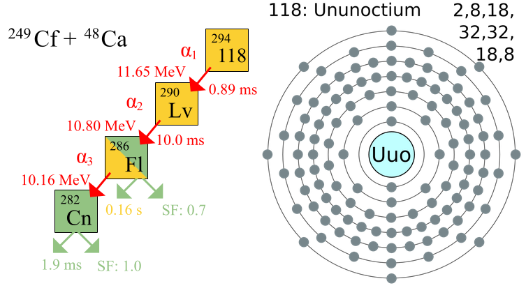

Elementos químicos
Información general
Un elemento químico es un tipo de materia constituida por átomos de la misma clase.1 En su forma más simple, posee un número determinado de protones en su núcleo, haciéndolo pertenecer a una categoría única clasificada con el número atómico, aún cuando este pueda desplegar distintas masas atómicas.
Es un átomo con características físicas únicas, aquella sustancia que no puede ser descompuesta mediante una reacción química, en otras más simples. Pueden existir dos átomos de un mismo elemento con características distintas y, en el caso de que estos posean número másico distinto, pertenecen al mismo elemento pero en lo que se conoce como uno de sus isótopos. También es importante diferenciar entre los «elementos químicos» de una sustancia simple. Los elementos se encuentran en la tabla periódica de los elementos.
Algunos elementos se han encontrado en la naturaleza y otros obtenidos de manera artificial, formando parte de sustancias simples o de compuestos químicos. Otros han sido creados artificialmente en los aceleradores de partículas o en reactores atómicos. Estos últimos suelen ser inestables y solo existen durante milésimas de segundo. A lo largo de la historia del universo se han ido generando la variedad de elementos químicos a partir de nucleosíntesis en varios procesos, fundamentalmente debidos a estrellas.
- Metales
- No metales
Metales
La mayor parte de los elementos metálicos exhibe el lustre brillante que asociamos a los metales. Los metales conducen el calor y la electricidad, son maleables (se pueden golpear para formar láminas delgadas) y dúctiles (se pueden estirar para formar alambres). Todos son sólidos a temperatura ambiente con excepción del mercurio (punto de fusión =–39 °C), que es un líquido. Dos metales se funden ligeramente por encima de la temperatura ambiente: el cesio a 28.4 °C y el galio a 29.8 °C. En el otro extremo, muchos metales se funden a temperaturas muy altas. Por ejemplo, el cromo se funde a 1900 °C.
Los metales tienden a tener energías de ionización bajas y por tanto se oxidan (pierden electrones) cuando sufren reacciones químicas. Los metales comunes tienen una relativa facilidad de oxidación. Muchos metales se oxidan con diversas sustancias comunes, incluidos O2 y los ácidos.
Se utilizan con fines estructurales, fabricación de recipientes, conducción del calor y la electricidad. Muchos de los iones metálicos cumplen funciones biológicas importantes: hierro, calcio, magnesio, sodio, potasio, cobre, manganeso, zinc, cobalto, molibdeno, cromo, estaño y vanadio.
No metales
Los no metales varían mucho en su apariencia, no son lustrosos y por lo general son malos conductores del calor y la electricidad. Sus puntos de fusión son más bajos que los de los metales (aunque el diamante, una forma de carbono, se funde a 700 °C en condiciones normales de presión y temperatura). Varios no metales existen en condiciones ordinarias como moléculas diatómicas. En esta lista están incluidos cinco gases (H2, N2, O2, F2 y Cl2), un líquido (Br2) y un sólido volátil (I2). El resto de los no metales son sólidos que pueden ser duros como el diamante o blandos como el azufre. Al contrario de los metales, son muy frágiles y no pueden estirarse en hilos ni en láminas. Se encuentran en los tres estados de la materia a temperatura ambiente: son gases (como el oxígeno), líquidos (bromo) y sólidos (como el carbono). No tienen brillo metálico y no reflejan la luz. Muchos no metales se encuentran en todos los seres vivos: carbono, hidrógeno, oxígeno, nitrógeno, fósforo y azufre en cantidades importantes. Otros son oligoelementos: flúor, silicio, arsénico, yodo, cloro.